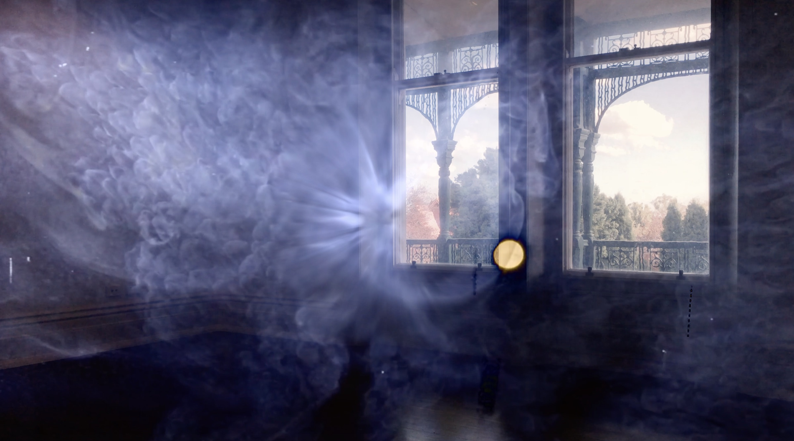

Archive / Collaborative project
Collider — Before Nightfall #13
- When
- 12—28 March 2021
- Programme
- FUSE Autumn 2021
- Presented by
- Speak Percussion · Bundoora Homestead
- Availability
- Free · Edition sold out
Project statement
Before Nightfall is Speak Percussion’s ongoing collaboration with guest artists. They spend the day exchanging ideas and present the findings in a free performance to the public after the night falls.
Created for FUSE Autumn 2021 during the COVID pandemic, Before Nightfall #13 reimagined the project as a listening experience for physical isolation.
Three musicians and one writer responded to Jon Butt’s Collider, creating four original works over the course of a single day at Bundoora Homestead. Working separately throughout the building under physical-distancing restrictions, each artist performed and recorded their contribution in isolation.
The resulting works were gathered into a limited-edition package and posted to registered audience members to experience at home: an aural journey shaped by Collider and the spaces of Bundoora Homestead.

Collaboration
Four responses, made apart.
Before Nightfall #13 was a collaboration between Speak Percussion, Bundoora Homestead, writer Claire G. Coleman and musicians Eugene Ughetti, Kaylie Melville and Tilman Robinson. The project drew inspiration from Collider, a site-specific video artwork by Jon Butt held in the Darebin Art Collection.
Limited-edition music package
- Audio
- USB containing new musical works performed by Eugene Ughetti, Kaylie Melville and Tilman Robinson
- Writing
- A piece of writing by Claire G. Coleman
- Process
- Photographs of the artists developing their new works
- Site
- Photographs of Bundoora Homestead
- Source work
- Images from Collider, the video artwork that inspired the project
Before Nightfall #13 artists
- Jon Butt
- Site-specific video artwork from the collection
- Claire G. Coleman
- Writer / reader
- Kaylie Melville
- Composer / performer
- Tilman Robinson
- Composer / performer
- Eugene Ughetti
- Composer / performer